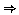

| 
|
The Object Centered Language Manual
OCLh - Version1.2
|

|
5. Development of an Hierarchical Domain Model
As a larger example, we will use a transport logistics model based on
Translog [4].
This is a nice example of a domain needing hierarchy and hierarchical operators.
A sort hierarchy for Translog is shown in Example 1, containing 4
dynamic primitive sorts truck, package, train, traincar and
hence 15 dynamic objects.
In here we give a full specification of our
Translog (although there
are a few differences to the examples below!).
sorts(physical-obj, [vehicle, package])
sorts(vehicle, [railv,roadv])
sorts(roadv, [truck])
sorts(railv, [train, traincar])
sorts(location, [city-location,city])
sorts(city-location, [tcentre,not-tcentre])
sorts(tcentre, [train-station])
sorts(not-tcentre, [clocation,post-office])
sorts(route, [road-route, rail-route])
objects(train-station, [city1-ts1,city2-ts1,city3-ts1])
objects(clocation, [city1-cl1,city1-cl2,city2-cl1,city3-cl1])
objects(post-office, [post_1])
objects(city, [city_1, city_2, city_3])
objects(train,[train_1,train_2])
objects(traincar,[traincar_1])
objects(road-route, [road-route_1,road-route_2,road-route_3])
objects(rail-route,[rail-route_2,rail-route_3,rail-route_4 ])
objects(truck, [truck_1, truck_2, truck_3, truck_11, truck_22, truck_33])
objects(package,[pk_1, pk_2, pk_3, pk_4, pk_5, pk_6])
Example 1
Let the predicates that
describe a train be at(train,location), attached(train,traincar),
unattached(train), in-service(train), available(train).
An example of an object description is:
(train,train_1,[at(train_1,city1-ts1), in-service(train_1), attached(train_1,traincar_1)])
Example 2
Here the local closed world assumption tells us that, for example,
the train is not available, and it
is not attached to other traincars apart from traincar_1.
Example 3 is an object expression as it is satisfied by an least
one object description - that of Example 2.
In this case train is a subsort of railv,
t = [train_1/T, city1-ts1/Y] and
in-city(city1-ts1,city1) is consistent with the domain
model.
(railv,T,[at(T,Y),in-service(T),in-city(Y,city1)])
Example 3
The substate in Example 2 has three hierarchical components -
at, relating to physical objects, attached relating to
rail vehicles, and in-service, relating specifically to trains.
Objects of sort train are described by
predicates through their primitive sort
but they also inherit the dynamic predicates from supersorts railv
and physical_obj.
substate_classes(physical_obj, P, [ [at(P,L), is-of-sort(L,train-station) ])
substate_classes(railv, V, [ [unattached(V)] ,
[attached(V,V1),is-of-sort(V1,traincar)] ])
substate_classes(train, T, [ [out-of-service(T)], [in-service(T)],
[in-service(T),available(T)] ])
Example 4: hierarchical substate specification for trains
Example 4 implicitly specifies the substates of the train. If there
are n stations, m traincars, and t
trains then this
implicitly defines all t*(n*(m+1)*3) substates.
Static predicates are used to capture the exact set required.
When object transitions appear in operators,
predicates in the hierarchy of the substate specification
that are not mentioned in
the left hand side of the transition are assumed to persist when it
is applied. For example, the transition of package P
[waiting(P),certified(P)][loaded(P,V),certified(P)]
changes the class expression:
(package,pk_1,[at(pk_1,L),waiting(pk_1),certified(pk_1)]
to:
(package,pk_1,[at(pk_1,L),loaded(pk_1,V),certified(pk_1)]
when this transition is applied. Here t = [pk_1/P],
and the predicate at(pk_1,L) persists as it is specified
at a higher level in package's hierarchy than the other predicates.
A compound operator C has components:
(Nm,Pre,Index,
[(Cons1,Temps1,Body1),
...,
(Consn,Tempsn,Bodyn)])
Nm is the operator's name followed by its
parameters, and Pre is a set of
object expressions that must be true before C
(unlike the prevail in a primitive operator
objects in Pre may be affected by the operators in the
expansion of C).
Index is a set of necessary
state transitions (possibly null) similar to Index in the
primitive operator case.
The (Consi,Tempsi,Bodyi) are conditional expansions, where
Consi and Tempsi are static conditions on the
parameters in the operator, and temporal constraints on the nodes
in the Bodyi, respectively.
If a Consi can be satisfied, the
compound operator can be expanded into the network
as specified in Bodyi (the Consi need not be mutually
exclusive).
Bodyi contains nodes in the
usual HTN fashion: a node is either
the name of a primitive operator, the name of a compound operator,
or an expression of the form `achieve-goal(G)', where G is
a class expression.
Compound operators can be split into n methods
of the form
(Nn,Pre,Index,Consi,Tempsi,Bodyi)
The example shows
a method for carrying a package from one location to
another within the same city.
method( carry-direct(P,O,D), [],
[ sc(package, P, [at(P,O),waiting(P),certified(P)]
[at(P,D),waiting(P),certified(P)])]
[is-of-sort(P,package), is-of-sort(V,truck),
in-city(O,CY), in-city(D,CY) ],
[before(1,2), before(2,3), before(3,4),before(4,5) ],
[comission(V,P), move(V,OL,O,R),
load-package(P,V,O), move(V,O,D,R1),
unload-package(P,V,D) ]).
Example 5: a `carry-direct' method
An OCLh compound operator has
no achievable conditions on intermediate nodes in its
body.
This is because constraints on the persistence of facts
(e.g. using a `between' constraint)
throughout a sequence of nodes in compound operator bodies
can be represented within the substate
specification of each sort, making the
constraints implicit as discussed in reference [2].
Whenever a method has been fully expanded to primitive operators,
the resulting plan must effect the transitions
given in the Index.
C may, however, change other objects
in ways conditional on its expansion into more detailed task
networks (such as the vehicle V in the
example above). The property that methods decompose into
networks that guarantee the transitions specified in a
method's index we have called
transparency. Some earlier work discussed the design and use of
a tool for checking the
transparency of a domain model [2].